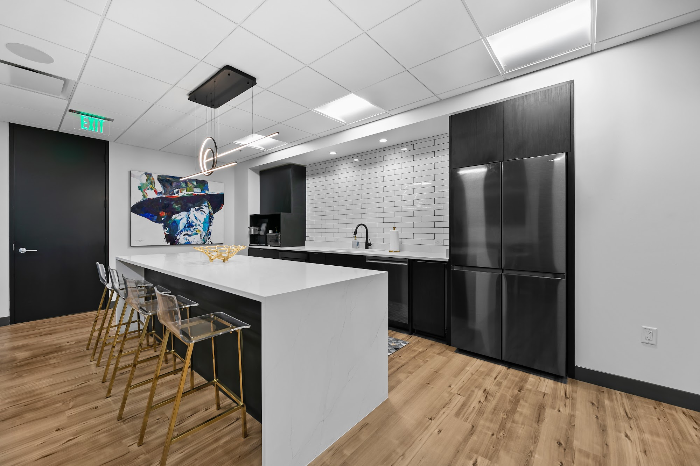

When To Consult Injury Counsel
A consultation with fort worth personal injury lawyer can be worthwhile soon after an incident causes significant harm, raises questions about responsibility, or involves more than one potentially liable party. Early guidance from fort worth personal injury lawyer may help a person understand immediate legal concerns, communicate carefully with insurers, and recognize issues that could affect a future claim. Medical attention and personal safety should come first, but legal advice need not wait until treatment is complete, especially when another party is already requesting statements or releases.
Legal assistance may also be appropriate when an insurer disputes fault, minimizes the extent of an injury, delays a decision, or offers terms that do not appear to reflect the full impact of the event. A discussion with fort worth personal injury lawyer can help clarify how evidence, applicable deadlines, and competing accounts may affect available options, while fort worth personal injury lawyer may assist in evaluating whether negotiation, a formal claim, or another response is appropriate. Prompt advice is particularly important when the injured person cannot work, needs ongoing care, or faces a claim from another party.
Not every incident requires litigation, yet obtaining an informed assessment can prevent avoidable mistakes and provide a clearer sense of the path ahead. Consider seeking fort worth personal injury lawyer when the injuries are serious, the consequences may be lasting, or the facts are contested, and choose a professional who explains the process in plain language. A timely consultation can help protect important rights while allowing decisions to be made with a realistic understanding of risks, options, and next steps.

Evaluating Trial Skills Before Hiring
When comparing legal representation for a contested matter, look for specific proof of courtroom capability rather than broad claims. fort worth personal injury lawyer Ask about the lawyer's personal role in depositions, evidentiary hearings, jury selection, opening statements, witness examination, and closing arguments. fort worth personal injury lawyer A useful answer should distinguish work the attorney performed directly from matters handled by colleagues, co-counsel, or outside advocates.
The discussion should also reveal how the attorney prepares when facts or testimony become difficult. fort worth personal injury lawyer Invite an explanation of how the lawyer tests a witness's reliability, responds to an unexpected ruling, and presents technical information in a clear sequence. fort worth personal injury lawyer References from professional contacts or former clients may add context, but they should supplement a focused conversation about judgment, composure, and adaptation under pressure.
Pay attention to whether the proposed working relationship supports deliberate preparation and candid communication. fort worth personal injury lawyer The attorney should be able to describe likely milestones, identify who will attend important proceedings, and explain how strategic decisions will be shared without promising a particular result. Concrete examples, thoughtful questions, and consistent answers provide a stronger basis for comparison than polished marketing language.
When Insurance Disputes Become Complex
An insurance claim is easier to evaluate when its factual record is organized from the beginning. Keep the policy, notices, estimates, photographs, and correspondence together, and record the date and substance of each conversation with the carrier. fort worth personal injury lawyer can help separate documented facts from assumptions, while fort worth personal injury lawyer may identify gaps that could affect coverage, causation, or the amount sought. A clear file also makes it easier to respond consistently when different representatives request the same information.
Disagreement often turns on the wording of an exclusion, a notice condition, or a limitation period rather than on the initial offer alone. Requesting the insurer's position in writing, including the provisions and facts it relies on, can prevent an informal explanation from becoming the only record. fort worth personal injury lawyer may help assess whether additional evidence from a neutral specialist would clarify the issue. If direct discussions do not resolve the matter, fort worth personal injury lawyer can help compare internal review, mediation, regulatory assistance, and other available pathways without treating any single option as automatic.
Practical care remains important throughout the process. Preserve original documents, follow applicable deadlines, and avoid making statements that go beyond what the records establish. If damaged property must be repaired or discarded, document its condition first and give the carrier a reasonable opportunity to inspect it when circumstances permit. fort worth personal injury lawyer can help weigh the strength of the evidence, the likely benefit of continued effort, and whether a negotiated outcome is proportionate to the time and expense involved.
Stephens Law
Stephens Law
1300 S University Dr #300 Fort Worth, TX 76107
(817) 420-7000